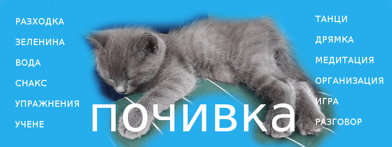

Почивка в офиса
Според теорията за фракталната почивка на Дъстин Московиц, съосновател на Facebook и Asana, трябва да си вземаме почивка на всяко ниво: както през деня, така и през годината. Наредбите ни осигуряват паузи и отпуск, а традиции и религията- уикенда, без който мнозина биха полудели. В някои професии, например в университетите, професорите задължително не преподават през няколко години.

Обаче, сред хаоса и стреса, сме изгубили способността си да го караме по- леко.
Затова ви представям някои идеи, с които да избегнете преумората и пренапрягането:
Разходка
Селяните от родното място на Гьоте си сверявали часовника по ежедневната му разходка.
Бетовен също работел най-добре в движение. Веднъж дори двамата гении се срещнали така.
Друг ентусиаст бил Чарлз Дикенс, които изминавал до 30 мили в града или около имението си в Кент. Не е зле!
Но не е нужно да изминавате толкова, защото дори 10 минутки може да прояснят ума ви, да ви разведрят или да ви помогнат да измислите творческо решение на належащ проблем.
На открито
Главата ви клюмва, клепачите ви натежават, а крайниците не ви слушат. Както знаете, когато много хора са събрани на едно място, може да се почувствате летаргично заради липсата на кислород. Същото става ако сте си легнали късно.
Затова има лесно решение: поседете на въздух. Може да си мислите, че във вашия случай е невъзможно, но все се намира да отидете на терасата, в къта с кактуси или в близката градинка.
Хидратация
Понякога може да си мислите че сте гладни, но всъщност това да е жажда. Като същества направени от поне 60% вода, трябва да полагате усилия да пиете достатъчно течности. Дали ще изберете чай, вода или смути, все е полезно. Кафето е малко по по-специален случай, но и то има своите предимства.
Снакс
Не бихте помислили, че може да пътувате без да сипете гориво в колата си, но защо тогава си мислите, че може да работите без да презаредите. Най-подходящи и здравословни за прилапване са ядките, плодове като ябълка и банан, йогурт или пък (мини)сандвич.
Разтегнете се
Дори и да нямате място за тренировка съществуват упражнения, които може да правите без да ставате от бюрото си, например вид йога. Не е необходимо да стряскате колегите, а може да ги правите тайно. Завъртете врат, протегнете крайниците си или се изправете. Ако пък имате малко повече свобода може да замените стола с топка. Или използвайте стената, стола или шише с вода като уреди.
Ако пък ви домързи, най- малкото си направете масаж.
Денс пауза
По- лесно е ако работите вкъщи или в отделен офис, но и с цял екип може да организирате импровизирана почивка с танци. Вярно, в началото може да е малко неловко, но като се отпуснете сплотява и зарежда с много енергия.
Качете си весели парчета на смартфона. Ако не сте сигурни каква музика да си пуснете, препоръчвам ви някоя салса, зумба или хип- хоп компилация.
Дрямка
Японците са превърнали дрямката в изкуство и успяват да си откраднат ценни минути в метрото, на бюрото или дори в кафенета. Дори са създали специална култура около този навик, наречена инемури.
Заради разминаване в часовите зони, испанците пък са измислили сиестата.
Салвадор Дали държал връзка с ключове, която падала и го събуждала когато се унасял. Томас Едисън ползвал топчета за същата цел.
Днес приложение на смартфона ни може да свърши подобна работа като дори следи фазите на съня.
Но благодарение на етиопците, които открили стимулиращите ефекти на кафето, имаме напучино. Ако не сте чували това е практика, при която изпивате чаша капучино, затваряте очи, а прилива на кофеин в кръвта ви събужда. Така сте хем отпочинали, хем заредени с енергия.
Медитация
Поемете дълбоко дъх. По всяка вероятност сте натрупали стрес, тревожност и напрегатост. За да прочистите ума си, може да пробвате медитация. Разбира се, има различни видове, но в основата си, тя представлява връщане към настоящия момент. Оправете стойката си, забележете обстановката, усещанията, звуците и миризмите или претеглете мислите си без да им се поддавате. Може да ползвате и мантра, и приложение- каквото ви помага. Бъдете зен!
Почистете и подредете
Натрупали ли са се папки, документи или други дреболии? Приберете ги. Често бъркотията пречи на ефективността ни или дори ни стресира. Освен бюрото, може да организирате и екрана на компютъра си. Може и да извадите или отворите необходимото за следващата ви задача: бележки, папки, програми…
Полейте растенията! Забършете праха! Нагласете температурата или щорите! Проветрете! Средата, съзнателно или не, има голямо влияние върху продуктивността ни.
Поиграйте си с някой
Ако работите от вкъщи, най-добре ще се разсеяте ако си поиграете с децата или домашния любимец. Tе най-добре ще ви заредят с положителна енергия и вдъхновение. Ако сте забили, нищо чудно, като се настроите на друга вълна, да ви дойде идея.
Поговорете с колегите
Как става, че изглежда, че някои колеги прекарват доста време в приказки, но все успяват да свършат работата си бързо и професионално. Ами вместо да се тормозят, да търсят напразно информация или да се чудят дали всички са наясно какво трябва да се свърши, просто питат. Така може да се обсъдят потенциално конфликтни въпроси насаме или при ниски залози.
А дори да не говорите на професионални теми, бъбренето с друго човешко същество ще ви отвлече от грижите и ще ви ободри.
Научете нещо
Не прекалявайте с мисловната дейност, но ако досега сте извършвали някаква досадна задача, разчупете рутината като гледате някой кратък TED talk (може да търсите по времетраене на сайта). Друг вариант е да прочетете качествена статия, да минете урок в Duolingo, или да изиграете някоя учебна игра като Luminosity, Brilliant или Elevate. Ако път ви сърбят ръцете, пробвайте да наредите кубчето на Рубик, да сглобите пъзел или си вземете книга за оцветяване. Или имайте някое произведение под ръка или свалено на телефона- Librivox е чудесен сайт за безплатни аудиокниги например.
***
Вместо да се тормозите, че не може да свършите нещо, защото сте прекалено уморени, вземете си почивка, после отпочинали свършете двойно повече работа.
И все пак ако ви е гузно да преустановявате дейност, преминете аналогово: вземете лист и хартия, принтирайте си за четене или намерете някой за съвещание.
Или ползвайте техниката Помодоро: 25 минути работа и 5 минути почивка. Доста е успокояващо.
Все пак не сте машина, така че трябва да наблегнете на уникалните си умения. Учете постоянно. Роботчетата така или иначе ще вършат все повече и повече от другите задачи.
Ако все не остава време за отдих, сложете го в календара си, както и време за мислене, творчество и стратегия. Не е задължително да сте мениджър, за да ви е полезно. Освен, че може да ви презареди, ще ви спести някои излишни усилия и дори ще ви помогне да растете и да задобрявате в работата.
Може би сте чували за японската концепция “ма”, а в страната на изгряващото слънце хич не са мързеливи. Концепцията значи, че, в нашия случай, работата и почивката не са в противоречие, а образуват едно цяло- едното е хаотично или дори невъзможно без другото.
Ако имате няколко момента да научите нещо, вижте безплатните обучения по бизнес.